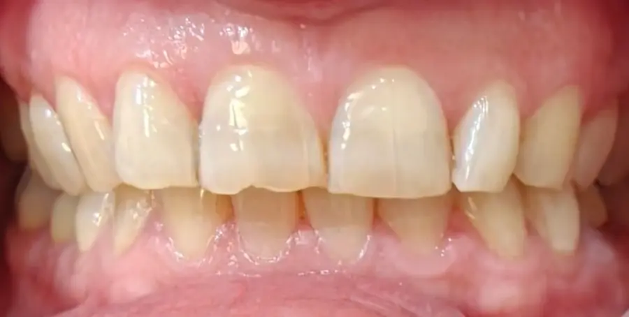

نسخه استخراجشده؛ ترجمه یا تأیید علمی انجام نشده است. وضعیت: captured
بیمار از رنگ زرد و فرم نامناسب دندانهای قدامیاش ناراضی است و اصلاح لبخند میخواهد. راهحل روتین این است که دندانها را برای لمینت بتراشیم، فرمها را اصلاح کنیم و برای سرامیک رنگ روشنی در نظر بگیریم. اما دغدغهی اصلی، حفظ بافت سالم دندان است. قبل از دست بردن به توربین، مسیر کمتراشتری هست؟

شروع فوری تراش برای لمینت رد شد و بهجایش یک فاز مقدماتی تجویز شد: پیش از هر اقدامی، یک دوره بلیچینگ. با این کار دو سناریو پیش رو است:
Clinical Tip: وقتی بیمار علاوه بر مشکلات دیگر تغییر رنگ زیادی لازم دارد، همیشه قبل از تراش به بلیچینگ فکر کن. روشنتر کردن دندان پایه (Stump shade) کلید اصلی کاهش ضخامت سرامیک لازم و داشتن یک تراش محافظهکارانه (Minimally Invasive) است. تراش محافظهکارانه و بستر روی انامل، طول عمر رستوریشن را هم بیشتر میکند.
نوع سؤال: ساخت کلمه · 4 خانه
حروف منبع: ا · ه · ی · پ